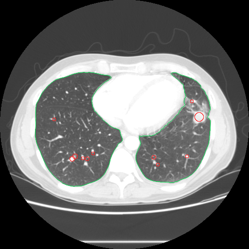
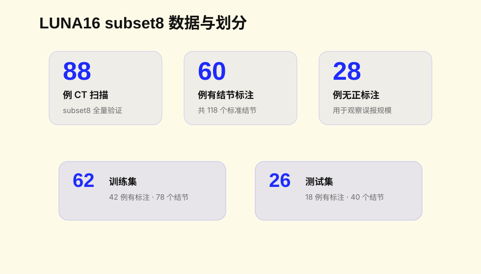
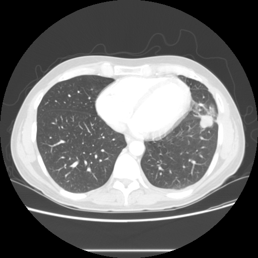
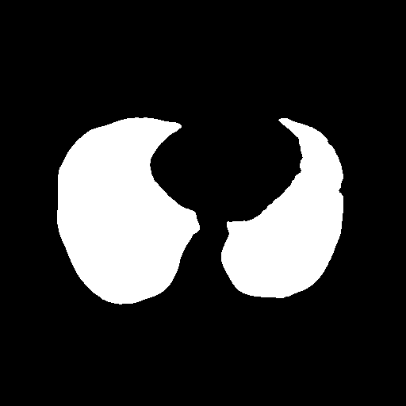
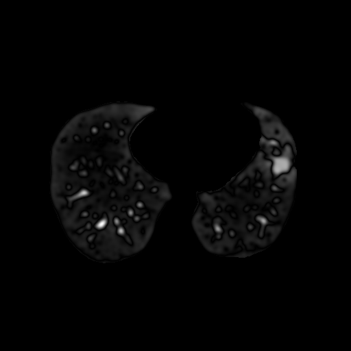
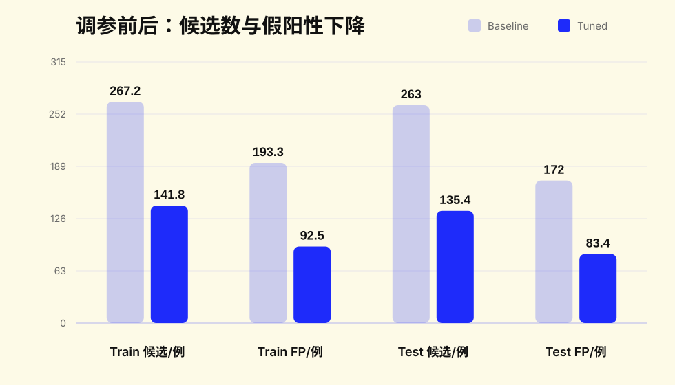
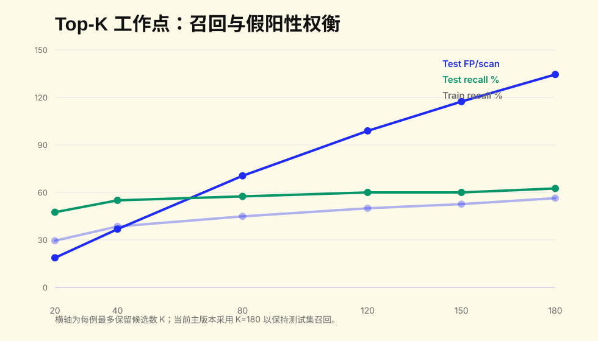
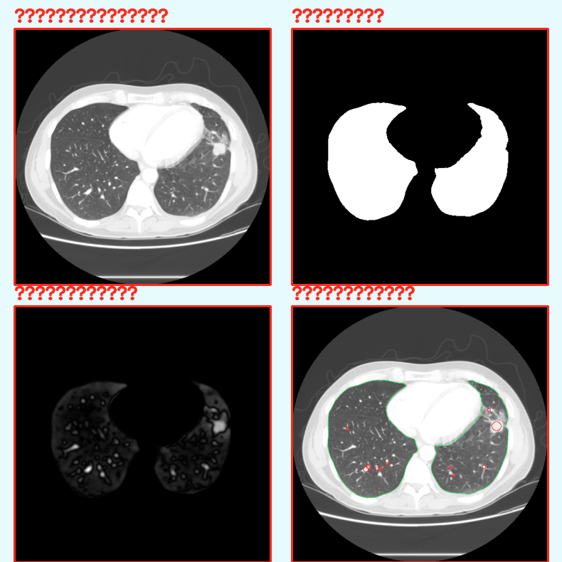

传统数字图像处理 Pipeline：MHD/RAW 读取、肺实质分割、频域增强、候选检测、特征筛选与 LUNA16 标注验证。
医学图像处理大作业 · C++17 / OpenCV / LUNA16 · 2026.05

真实 LUNA16 subset8 病例检测叠加示例：绿色为肺边界，红圈为程序候选。
为什么选肺结节；LUNA16 的 CT 数据和标准标注是什么。
从 3D CT 到逐层 2D 候选，再合并为 3D 结节。
肺窗显示、肺掩膜、频域带通增强、连通域候选。
使用官方 annotations.csv 进行 3D 坐标距离匹配。
训练/测试划分下削减假阳性，保持测试集召回。
界面操作、可解释性、局限与下一步改进。


窗口图肺窗 WL=-600, WW=1500；将 HU 映射为可见灰度。
肺掩膜白色为程序认为的肺区域，后续只在这里搜索。
频域增强突出结节尺度附近的中频结构。训练集用于选择参数，测试集只用于最终评估。当前版本相比 baseline 在测试集严格召回不变的前提下，候选数约减半。



批量验证目录默认不保存完整切片图；演示目录需要不加 --no-debug-images 重新跑一例。
我们完成了一个纯传统图像处理的肺结节检测与可视化系统：能读取真实 LUNA16 CT，生成候选结节，并用官方标注进行可复现验证。
代码仓库
github.com/YunfanGoForIt/lung-ct-nodule-detection
医学图像处理大作业 · C++ / OpenCV · LUNA16